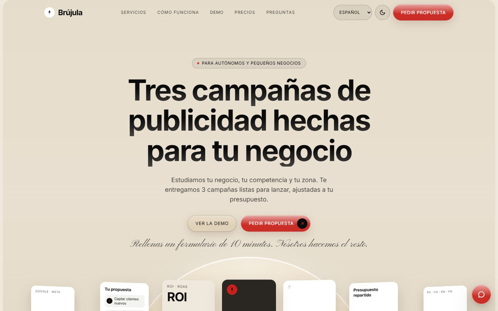
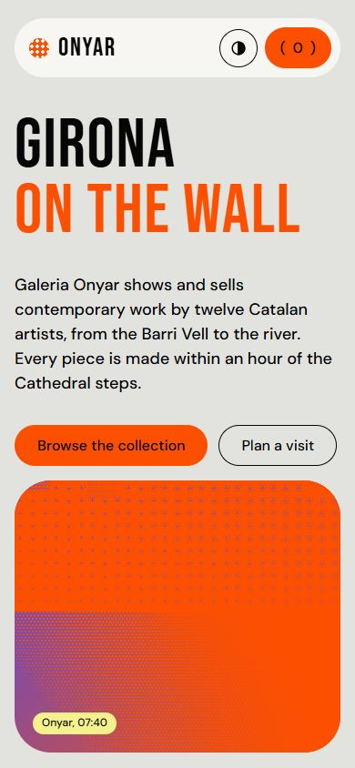
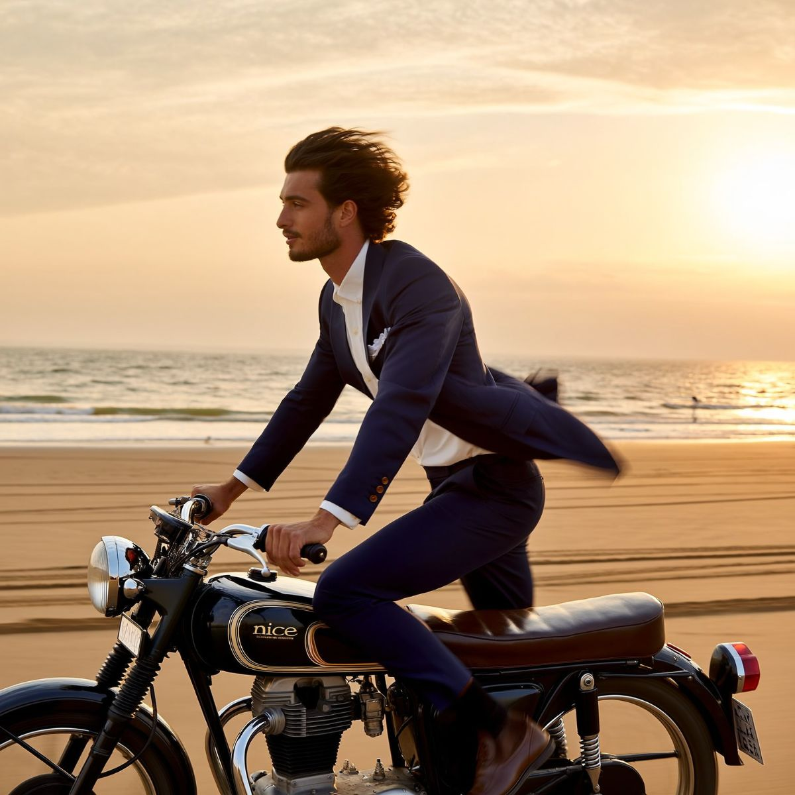
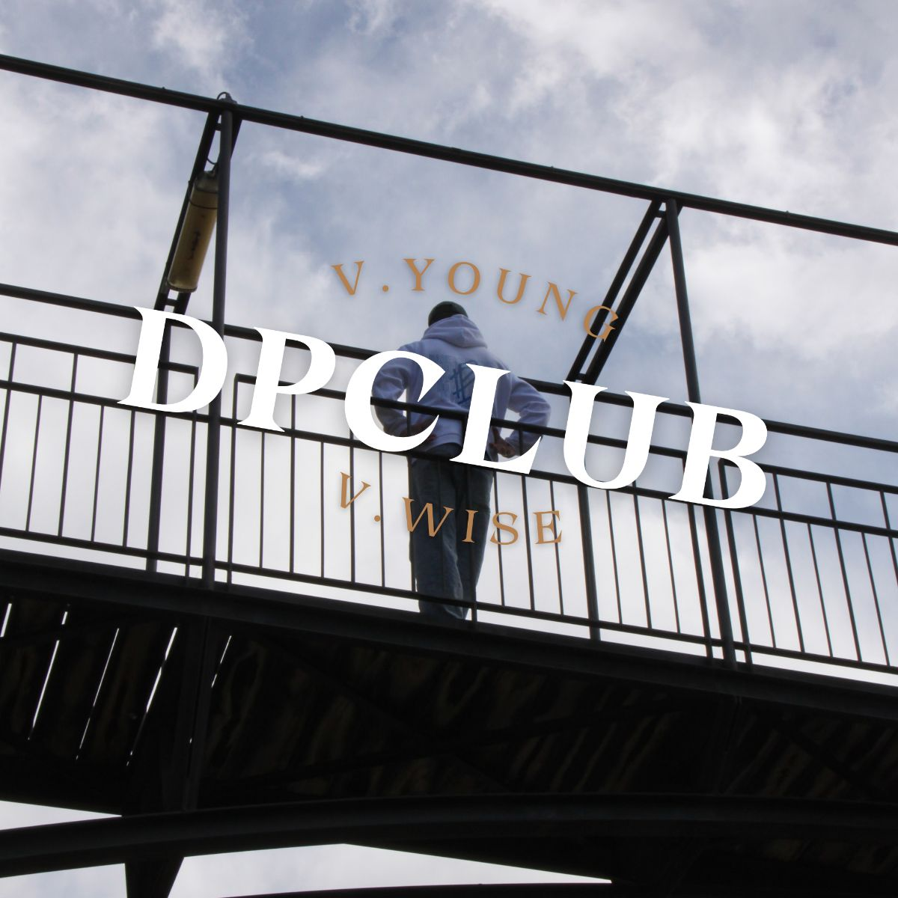

Webs
Les webs on he participat, ordenades de més nova a més antiga. Al final hi ha una selecció d'altres projectes de branding, moda i cartells.


Brúixola actual i anterior
Brúixola(W1)Ubica't. Troba el teu nord.
Brúixola proposa campanyes de publicitat a autònoms i petits negocis de Girona: el programa analitza el negoci, la competència i el barri, i una persona valida les tres campanyes abans d'enviar-les.
La web actual és una experiència fosca que es pinta amb el scroll: la B feta a pinzell, amb la brúixola dins, va guiant la lectura amb paraules gegants com UBICA'T i ESTRATÈGIA, i acaba als plans i a la llista d'espera.
- Animació amb scroll
- Pinzell i brúixola
- 4 idiomes
- Llista d'espera
- Plans i preus

D'on venim: la primera versió
Abans de la versió actual vam fer Brújula, una primera web en castellà, clara i càlida: demo interactiva, exemples de proposta per sector, plans, preguntes freqüents i un formulari per demanar proposta. Va servir per ordenar el missatge; la versió actual el converteix en una experiència.

Galeria d'art
Galeria Onyar(W2)Girona on the wall.
Una web per a una galeria d'art contemporani del Barri Vell de Girona, amb obra de dotze artistes catalans. Tipografia condensada enorme, taronja intens i tramats de risografia com a imatge de marca.
La col·lecció es pot filtrar per tècnica i cada obra es reserva amb un clic: el comptador del menú puja a l'instant. També hi ha les exposicions, la visita amb horaris i un butlletí per rebre les inauguracions.
- Col·lecció filtrable
- Reserves
- Mode clar i fosc
- Exposicions
- Butlletí


Web d'empresa
All Electric Motors(W3)Bombes d'aigua i motors elèctrics.
La nova web d'una empresa especialitzada en la venda, la reparació i el manteniment de bombes d'aigua i motors elèctrics. Partim de la web antiga i la rehacem de zero, mantenint el que funcionava: el vermell del logotip i la capçalera amb el logo en una targeta blanca.
És una web estàtica i ràpida, amb adreces llegibles per idioma, tipografia allotjada a la mateixa web, el mapa que només es carrega si l'usuari el demana i botons fixos per trucar o contactar. Ara mateix tenim l'estructura feta i anem omplint el contingut fase a fase.
- Multilingüe
- Sense galetes de tercers
- Botons de trucada
- Web estàtica
Projecte en curs: les captures mostren l'estructura de la fase 1.
Web personal
Portafoli Can Colls(W4)Old values, new life.
La primera versió del meu portafoli, feta amb el manual de Can Colls: blau, blanc trencat i Montserrat. Un collage amb polaroid a la portada, un manifest que s'il·lumina paraula per paraula i imatges que creixen amb el scroll.
Els serveis són tiquets de caixa, el contacte és una targeta d'embarcament i hi ha tres clauers en 3D que es poden arrossegar. Tot traduït a set idiomes. Aquesta web que mires n'és l'evolució.
- 7 idiomes
- Clauers en 3D
- Escenes de scroll
- Menú de vidre
Revista de marques
Segell(W5)Brand culture · Cultura de marca.
Una revista mensual sobre marques que es llegeix a la web, pàgina a pàgina, com una de paper. Cada número té una portada i una direcció d'art pròpies, pensades a partir de la marca que s'hi explica.
Nº01 Olivetti, la fàbrica que pensava com un dissenyador. Nº02 Nordest Arquitectura, cases que no volen cridar més que el paisatge. Nº03 Nude Project, dos nois de 19 anys i 600 euros.
- Lectura per pàgines
- Portades pròpies
- Direcció d'art
Altres projectes
Abans de les webs hi va haver la marca. Una selecció curta de branding, moda i cartelleria.
Identitat visual
Can Colls Disseny(A1)
La meva pròpia marca: un estudi de branding unipersonal per a petits negocis que volen semblar consolidats sense perdre el que els fa diferents.
Branding de moda
Nice(A2)
Una marca de roba de vestir creada des de zero. Vaig liderar totes les fases: conceptualització, identitat visual, manual de marca i mockups, fins a la supervisió de la producció final.
Una "n" en serif com a monograma, paleta navy i crema, bossa, etiquetes i una campanya fotogràfica on el vestit és el protagonista: cotxe clàssic, platja, bosc.

Campanya Nice · The confidence of a suit
Marca i comunitat
DParadise Club(A3)
Dues marques de roba, DParadise i Fox Rides, que vaig crear juntament amb un soci. Entre els dos vam portar tota la cadena de valor: selecció de proveïdors, branding i posicionament a xarxes socials.
Campanyes com "The Spring Dream" i "D.ParadiseClub is open", cartells amb codi QR i un feed pensat per construir comunitat. Una experiència clau per entendre els reptes del mercat real.

DPClub · NGL I was mad
Cartelleria
Sèrie personal
Música, cinema i cotxes que m'han marcat. Tipografia gran, fotografia i la composició del cartell clàssic. Fets amb Affinity.
Contacte ràpid
T'agrada el que veus?
Un clic i s’obre Gmail en una pestanya nova amb el correu ja escrit per demanar-me més informació. Només l’has d’enviar.
Vull més informació